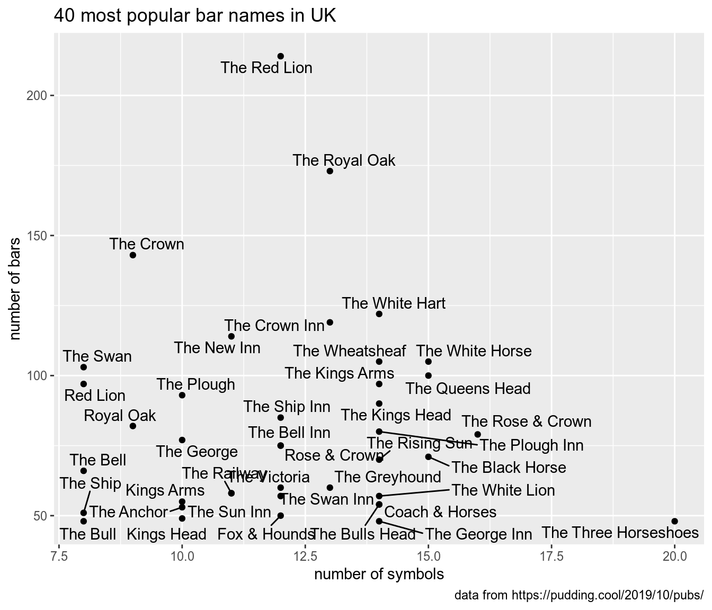
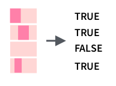

5 Strings manipulation: stringr
We will use stringr package (in tidyverse) for string manipulation, so do not forget to load the tidyverse library.
5.1 How to create a string?
In order to create a string you need to keep an eye on quotes:
## [1] "the quick brown fox jumps over the lazy dog"## [1] "the quick brown fox jumps over the lazy dog"## [1] "the quick 'brown' fox jumps over the lazy dog"## [1] "the quick \"brown\" fox jumps over the lazy dog"## [1] "the quick \"brown\" fox jumps over the lazy dog"There is also an empty string (it is not the same as NA):
## [1] ""## [1] ""## [1] "" "" ""It is possible to convert something to a string:
## [1] "integer"## [1] "4" "5" "6" "7"In this section I will show all examples using build-in datasets:
## [1] "a" "b" "c" "d" "e" "f" "g" "h" "i" "j" "k" "l" "m" "n" "o" "p" "q" "r" "s"
## [20] "t" "u" "v" "w" "x" "y" "z"## [1] "A" "B" "C" "D" "E" "F" "G" "H" "I" "J" "K" "L" "M" "N" "O" "P" "Q" "R" "S"
## [20] "T" "U" "V" "W" "X" "Y" "Z"## [1] "January" "February" "March" "April" "May" "June"
## [7] "July" "August" "September" "October" "November" "December"## [1] "Jan" "Feb" "Mar" "Apr" "May" "Jun" "Jul" "Aug" "Sep" "Oct" "Nov" "Dec"5.2 Merging strings
The function str_c() joins two or more vectors element-wise into a single character vector:
It is possible to specify a string, that will be inserted between input vectors.
tibble(upper = rev(LETTERS), smaller = letters) %>%
mutate(merge = str_c(upper, smaller, sep = "_"))The str_c() function is vectorised, so it returns the number of strings that it got to the input. It is possible to merge all merged strings into one bigger string using the collapse argument.
## [1] "Z_a" "Y_b" "X_c" "W_d" "V_e" "U_f" "T_g" "S_h" "R_i" "Q_j" "P_k" "O_l"
## [13] "N_m" "M_n" "L_o" "K_p" "J_q" "I_r" "H_s" "G_t" "F_u" "E_v" "D_w" "C_x"
## [25] "B_y" "A_z"## [1] "Z_a-Y_b-X_c-W_d-V_e-U_f-T_g-S_h-R_i-Q_j-P_k-O_l-N_m-M_n-L_o-K_p-J_q-I_r-H_s-G_t-F_u-E_v-D_w-C_x-B_y-A_z"The separate() function turns a single character column into multiple columns using some pattern. This function has three arguments:
col– column with vectors, that should be separatedinto– vector of names of new columnssep– pattern that should be used as a separator
5.3 Analysing strings
In order to calculate the number of symbols in a string you can use the str_count() function.

There is an additional argument in the str_count() function that defines a string for counting:

There is an article on Pudding about English pubs. Here is an aggregated dataset, that they used. Visualise 40 most popular pub names in UK: number of symbols on x axis and number of pubs with this name on y axis.

There is also a useful function str_detect(), that returns TRUE, when a substring is found in a greater string, or FALSE, when a substring is absent.

5.4 Changing strings
5.4.1 Convert case
## [1] "THE QUICK BROWN FOX JUMPS OVER THE LAZY DOG"## [1] "the quick brown fox jumps over the lazy dog"## [1] "The Quick Brown Fox Jumps Over The Lazy Dog"5.4.2 Extracting a substring from a string
Extract the substring from a string: по индексам функцией str_sub(), и по подстроке функцией str_extract().


By default the str_extract() function returns first instances of substrings. It is possible to use the str_extract_all() function in order to extract all instances of a substring, but the result needs to be converted to the tibble format.
5.4.3 Replacing a substring
There is a function str_replace(), that will replace a substring in a string with another string:

As other functions the str_replace() function makes only one replacement. If you need to change multiple substrings in a string you can use the str_replace_all() function: